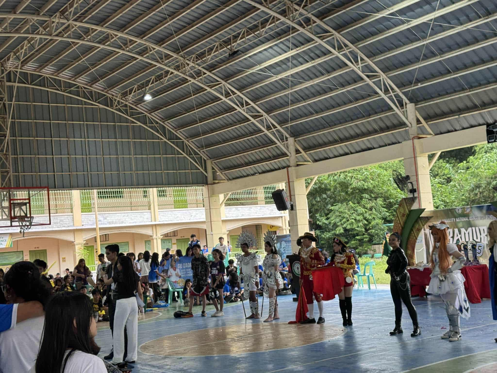
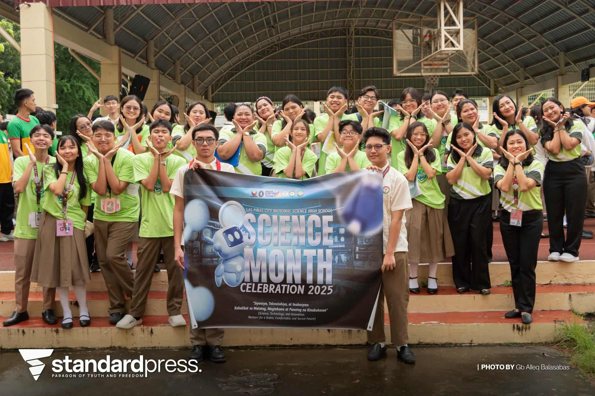
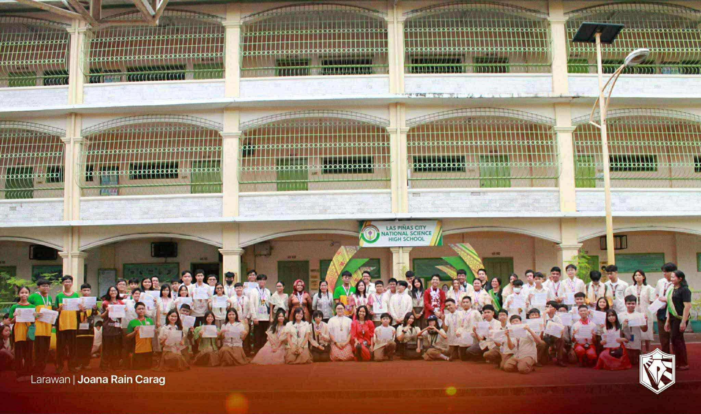
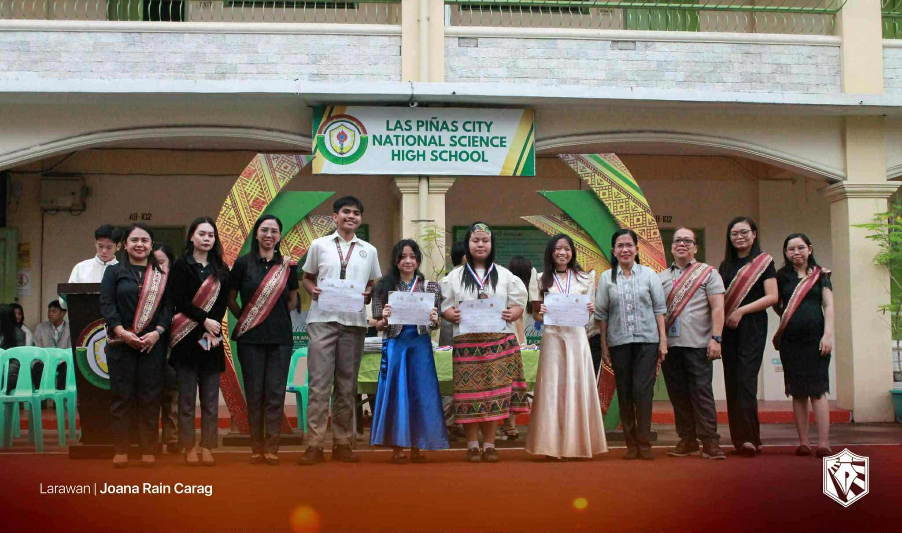
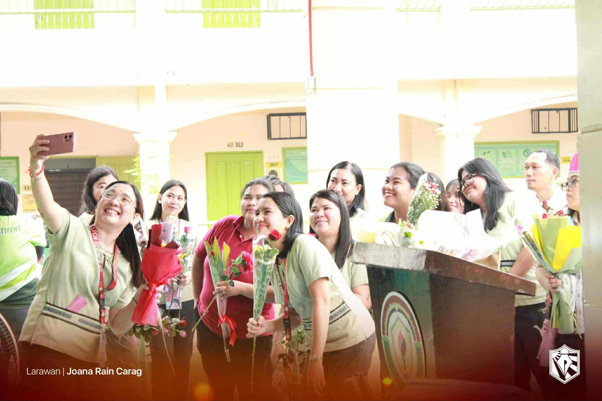
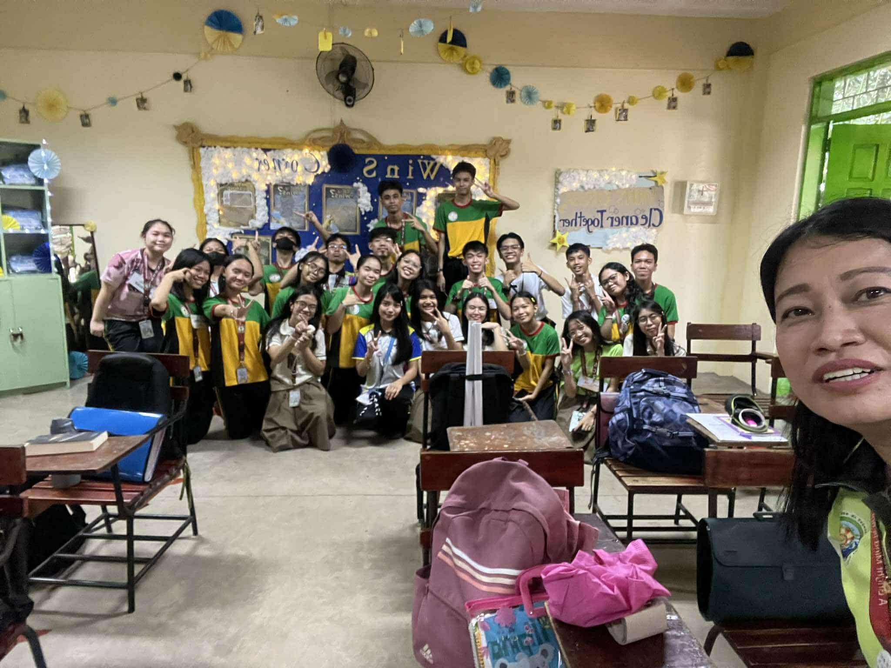

The Intramurals for S.Y. '25 - '26 was really fun. From the look on everyone's faces, I could tell they were enjoying watching and participating in the games. One thing I've learned in this year's intramurals is that victory is achieved with teamwork. To become a victor is to become one with your teammates. I believe it's not possible to win team sports by yourself because you need each other to work things out. You must hear others' ideas and combine them with yours, to ultimately form a strategy to win. In this year, I would say that I actively participated in the games. I played basketball, volleyball, and substituted for a friend in the 4x100m dash which was very fun.

Science Month
Based on the activities, I would say everyone had a great time during the Science Month. Some joined the quiz bee, some took photos, some built a mini-garden, and some just spectated. All of these activities prepared by the Science Club brought joy to everyone especially, the WinS Corner Project. The WinS Corner promoted proper hygiene for all. It featured the steps on handwashing and toothbrushing, making sure everyone was well-informed how to do it properly. The WinS corner promoted teamwork among classmates. All the cardboard, colored paper, and paint used on each WinS Corner was used by everyone, each of us helped in making the WinS Corner to what it is now.

Buwan ng Wika
Buwan ng Wika for everyone was fun. There was quiz bee for each grade level which brought intensity to all students. Also, each grade level had a particular competition for representatives to compete. For Grade 9, it was the declamation. I would say I actively participated because we had a classroom elimination and Performance Task to pick our representative who will compete with others. Although not picked, I'm happy because our representative, Gab, won the competition and achieved victory for the class. A thing I've learned in this year's Buwan ng Wika is that our language is important. Despite our differences in culture and beliefs, the Filipino language is one thing that keeps us united to work together.


Teacher's Day
The Teachers' Day this year was the best. Not only did we have our own fun celebrations at our classrooms but we also had a crying session. Because of my classmates' heartfelt letters to our teachers, they couldn't help but cry seeing how much we value and appreciate our teachers' efforts to teach and help us. I've learned from our celebration that we, my classmates and I, together with our teachers, are the ones who will be together for the rest of the school year. So, as much as possible, we should think of each other as family and love each one. In fact, unity is what's really needed inside the classroom. Loving one another while being united with one purpose: to study. Let's not forget that it's the people were with that makes studying bearable and fun. They're what makes school worth waking up for.


AP Month
Lastly, the AP Month. To be honest, not much happened yet since the opening ceremony. Because of the frequent class suspension, I suppose the AP Club couldn't push through with their other activities yet. But they're already done with the quiz bee. Fun fact is I was supposed to be one of our representatives for the quiz bee. But I backed out late because I was sick for the whole week. Another project during the AP Month is the MANA. It tackled the issues involving the West Philippine Sea and how we could protect it. Due to the frequent suspensions, it's sad that other activities were moved to November. And this is all I can say about AP Month.